suppressPackageStartupMessages(
{
library(dplyr)
library(ggplot2)
library(kableExtra)
library(GGally)
library(multiSPC)
library(multiway)
}
)4 Cartes multivariées
4.1 Introduction
Cours précédent : une caractéristique \(X\) de la production suivie au cours du temps par carte de la moyenne de Shewhart et carte EWMA
Ce cours : plusieurs variables \(X_1,...,X_p\) caractérisant la production. Il existe toujours des liens entre ces variables donc faire des cartes univariées n’est pas optimal.
4.2 Exemple :
Au cours du processus de fabrication d’un tube en fibre de carbone spécifique, trois caractéristiques qualitatives corrélées sont mesurées : le diamètre intérieur, l’épaisseur et la longueur du tube.
Ici les données sont sous la forme d’une matrice à trois dimensions.
On note \[X=[x_{tji}]\] la matrice des données où \(t\) est le numéro du prélèvement (\(t=1,...,k\)), \(j\) est l’indice de la variable (\(j=1,...,p\)) et \(i\) le numéro de l’observation (\(i=1,...,n\)).
data("carbon1")
class(carbon1)[1] "array"dim(carbon1)[1] 30 3 84.3 Notations
Les données sont dans une matrice à trois dimensions.
On replie la troisème dimension en calculant les moyennes de chaque prélèvement sur chaque caractéristique on obtient donc une matrice \((k,p)\) dont les éléments sont les moyennes.
On peut tracer le graphe de corrélation des 30 moyennes de \(X=(X_1,X_2,X_3)\) :
M=Moy_X(carbon1)
ggpairs(M)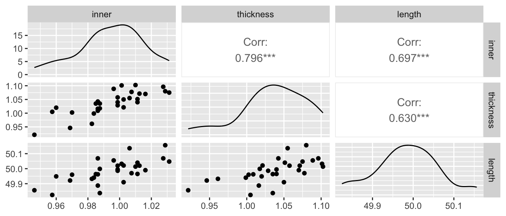
On en déduit que les corrélations entre les trois caractéristiques sont fortes et significatives.
4.4 Matrice de covariance
Soit \(X,Y\) deux variables aléatoires réelles, la covariance \(\sigma_{X,Y}=\mathbb E \left([X-\mathbb E(X)][Y-\mathbb E(Y)] \right)\). On a \(\sigma_{X,X}=\sigma^2_X\) (variance de X).
Si les variables \(X,Y\) sont indépendantes alors \(\sigma_{X,Y}=0\). (réciproque fausse)
Soit \((X_1,...,X_p)\) des variables aléatoires réelles. On appelle matrice de covariance la matrice \[\Sigma=[\sigma_{ij}]_{i,j=1,...,p}.\]
On peut aussi écrire cette matrice sous forme vectorielle. Soit \(X=(X_1,...,X_p)\) la vecteur aléatoire alors \[\Sigma=\mathbb E \left([X-\mathbb E(X)].[X-\mathbb E(X)]^T \right).\]
Propriétés de \(\Sigma\)
\(\Sigma\) est symétrique donc elle est diagonalisable.
\(\Sigma\) est semi-définie positive, c’est à dire que ses valeurs propres \(\lambda_1,...\lambda_p\) sont postives ou nulles.
\(\Sigma\) est définie positive (vp strictement positives) si il n’existe aucune relation affine entre les variables \((X_1,...,X_p)\). Dans ce cas \(\Sigma\) est inversible, c’est à dire qu’il existe une matrice notée \(\Sigma^{-1}\) telle que \[\Sigma^{-1}.\Sigma=\Sigma.\Sigma^{-1}=I_p\]
Il faut estimer cette matrice à partir de la matrice de données \(X_{tji}\) : il s’agit de la moyenne des covariances empiriques des \(k\) prélèvements.
Estimation de \(\Sigma\)
Pour \(t=1,...,k\) on calcule la covariance \(S_t\) de la matrice \((X_{tji})_{ji}\) et on choisit \[\hat\Sigma\simeq\frac1{k}\sum_{t=1}^kS_t.\]
La fonction covariance_X du package multiSPC permet de réaliser ce calcul.
covariance_X(carbon1) inner thickness length
inner 0.002486845 0.003586726 0.006694762
thickness 0.003586726 0.014491131 0.010203155
length 0.006694762 0.010203155 0.059207381Remarque : La corrélation est la covariance des variables standardisées.
4.5 La distribution normale multivariée}
La densité de probabilité de \(X\sim \mathcal N(\mu,\sigma)\) est pour \(x\in \mathbb R\) \[f(x)=\frac{1}{\sigma\sqrt{2\pi}}e^{-\frac1{2}[\sigma^{-1}(x-\mu)]^2}.\]
Exemple : \(\mu=0,\sigma=1\), \(\varphi(x)=\frac{1}{\sqrt{2\pi}}e^{-\frac1{2}x^2}.\)
On a \(\varphi(0)=\) 0.4 et \(\varphi(2)=\) 0.1

La densité de probabilité de \((X_1,...,X_p)\sim \mathcal N_p(\mu,\Sigma)\) est pour \(x=(x_1,...,x_p)\in \mathbb R^p\) \[f_p(x)=\frac{1}{|\Sigma|^{-1/2}\sqrt{2\pi}}e^{-\frac1{2}[(x-\mu)^T\Sigma^{-1}(x-\mu)]}.\]
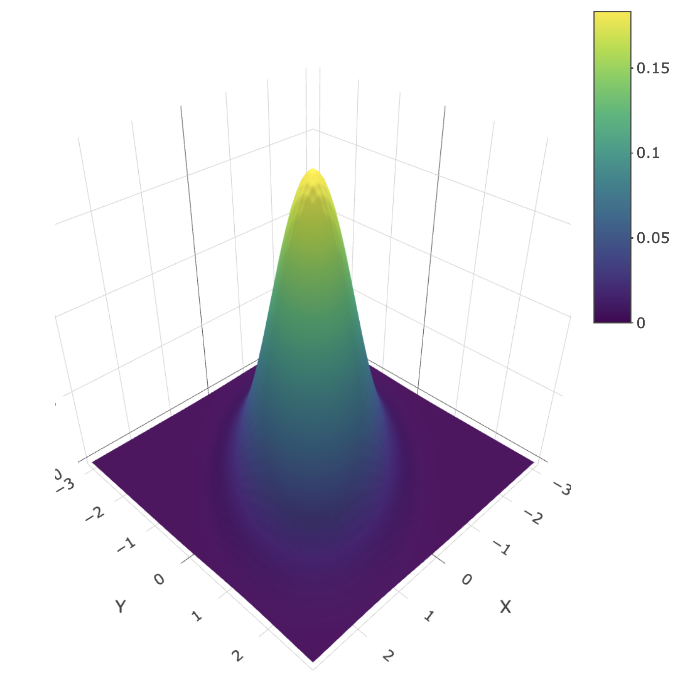
La loi normale ci-dessus a pour paramètres \(\mu=\begin{pmatrix}0\\0 \end{pmatrix}\) et \(\Sigma=\begin{pmatrix} 1 & 0.5 \\ 0.5 & 1 \end{pmatrix}\).
Tout plan vertical passant par \((0,0)\) donne une loi normale centrée.
4.6 Cartes de contrôles \(T^2\) Hotelling
4.6.1 Généralités
Le vecteur des caractéristiques \(X=(X_1,...,X_p)\sim \mathcal N_p(\mu,\Sigma).\)
Pour un prélèvement \(t\), \(\bar X_{t}=(\bar X_{t1},...,\bar X_{tp})\) avec \(X_{t}=\) i.i.d. de même loi que \(X\).
\(T_t^2\) de Hotelling est défini par \[T_t^2=(\bar X_t-\mu)^T.\Sigma^{-1}.(\bar X_t-\mu).\]
En pratique les paramètres \(\mu,\Sigma\) inconnus et approximés par \(\overline X\) et \(\hat \Sigma\) (cf paragraphe précédent).
Approximation de \(T_t^2\) donnée par \[ \hat T_t^2=(\bar X_t-\overline{X})^T.\hat \Sigma^{-1}.(\bar X_t-\overline{X}). \] La statistique \(\hat T_t^2\) suit une loi de Fisher à \((p,kn-k-p+1)\) degrés de liberté.
Quelques remarques
La statistique de Hotelling est une généralisation du \(t\) de Student. En effet pour \(p=1\) on retrouve la formule \(T^2=t^2\).
\(T_t^2\) donne une mesure de l’éloignement de la moyenne d’un prélèvement \(t\) par rapport à la moyenne de la production (en multidimensionnel) donc c’est une généralisation de la carte de Shewart de la moyenne.
Comme les cartes de Shewhart elles vont permettre de détecter des grandes déviations de moyenne.
Construire une carte basée sur le \(T^2\) est alors possible dans la mesure où c’est un indicateur univarié (réel).
La moyenne empirique \(\overline X\) est égale à
Moy_T(carbon1) inner thickness length
0.9949583 1.0372083 49.9843333 Sur R :
T2=T2_Hotelling_kn(data = carbon1)
print(T2) [1] 4.98848636 4.65756465 3.27858449 1.93129021 5.61700024 4.63924111
[7] 5.50056763 0.86557296 2.87376790 0.48616297 2.39585925 1.98317510
[13] 2.36109313 0.96030773 0.35242206 0.22362835 0.05247532 0.86290231
[19] 3.42953651 1.08381086 0.45175392 2.73538851 9.43218347 2.92725106
[25] 0.46222199 1.33752988 3.38986615 1.96857745 3.53540827 1.403664394.6.2 Construction de la carte (Phase I)
Pour la phase I (construction de la carte de Hotelling) on pose : \[LSC=\frac{p(k-1)(n-1)}{kn-k-p+1}F_{(p,kn-k-p+1)}(1-\alpha).\]
Pour la phase II (futures observations,[!] \(k\) est le nombre de prélèvements de la phase I) on pose : \[LSC=\frac{p(k+1)(n-1)}{kn-k-p+1}F_{(p,kn-k-p+1)}(1-\alpha).\]
k=dim(carbon1)[1]
LSCT2=LSC_T2_Hotelling_kn(carbon1)
print(LSCT2) PhaseI PhaseII
11.35182 12.13470 Ce qui donne la carte suivante (sur les données ayant permis de calculer LSC) :
plot_chart(T2,LSC=LSCT2["PhaseI"],Type="Carte du T2")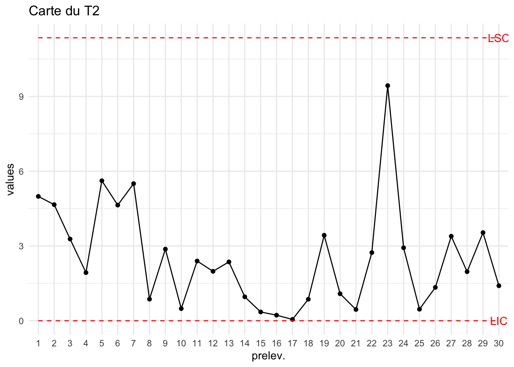
4.6.3 Application des limites de contrôle (Phase II)
data("carbon2")
T2=T2_Hotelling_kn(carbon2,
MoyT =Moy_T(carbon1),
S=covariance_X(carbon1))
plot_chart(T2,LSC=LSCT2["PhaseII"],Type="Carte T2 de Hotelling")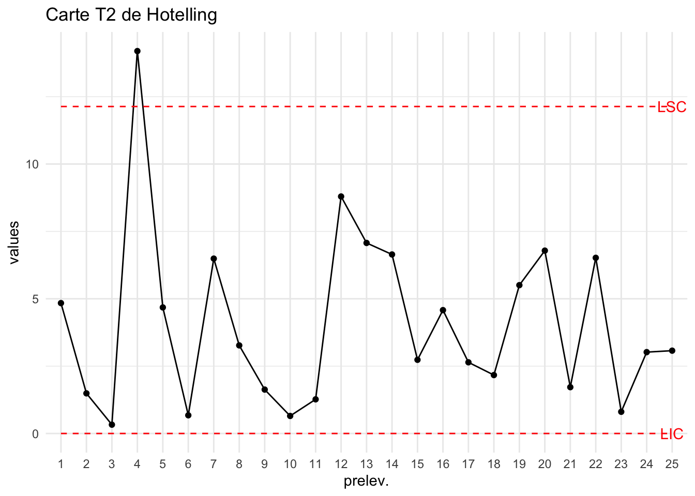
On a prélevé 25 nouveaux échantillons et on identifie un point hors-contrôle (4ième prélèvement).
Pour les caractéristiques univariées, lorsqu’un point est hors des limites de contrôles, il est évident que le procédé a eu une déviation non aléatoire.
Pour les caractéristiques multivariées, il est nécessaire d’identifier laquelle (lesquelles) a (ont) eu une déviation non aléatoire.
MYT décomposition
On considère un prélèvement \(t\) Hors Contrôle, on note \(\mathcal{X}=(X_{tji})_{ji}\) la matrice des caractéristique de ce prélèvement. On note \(\bar{\mathcal{X}}=(\bar{\mathcal {X}}_1,...,\bar{\mathcal{X}}_p)\) le vecteur des moyennes de ces caractéristiques.
- Etape 1 : Contribution individuelle.
Calculer \(T^2_{j}=\frac{n(\bar{\mathcal {X}}_j-\overline{\overline X}_j)^2}{s_j^2}\) pour chaque variable \(j\) où \(s_j^2\) est la variance de la caractéristique \(\bar{\mathcal {X}}_j\).
Calculer pour \(p=1\), \(LSC=\frac{p(k+1)(k-1)}{k(k-p)}F_{(p,k-p)}(1-\alpha).\)
Exclure les variables \(j\) qui vérifient \(T^2_j>LSC.\)
- Etape 2 : Contribution bivariée. On retire toutes variables identifiées à l’étape 1. On note \(J\) les indices des variables restantes
Pour \(j,j'\in J\), calculer \(T_{jj'}^2\) correspondant aux colonnes \(j,j'\) de la matrice \(\mathcal{X}\).
Calculer pour \(p=2\), \(LSC=\frac{p(k+1)(k-1)}{k(k-p)}F_{(p,k-p)}(1-\alpha).\)
Exclure les variables \(j,j'\) qui vérifient \(T^2_{jj'}>LSC.\) On itère les étapes précédentes jusqu’au modèle qui contient toutes les variables restantes.
Retour sur l’exemple :
p=dim(carbon2)[2]
k=dim(carbon2)[1]
T2j=NULL
for(j in 1:p) T2j=c(T2j,T2_Hotelling_kn_MYT(k_hc=4,k=k,select=j,
data=carbon2,MoyT=Moy_T(carbon1))$T2)
T2j inner thickness length
4.795952 12.259130 3.416894 T2_Hotelling_kn_MYT(k_hc=4,k=k,select=1,data=carbon2,MoyT=Moy_T(carbon1))$LSC[1] 8.135785La variable tickness est donc exclue.
T2_Hotelling_kn_MYT(k_hc=4,k=k,select=c(1,3),data=carbon2,MoyT=Moy_T(carbon1))$T2
[,1]
[1,] 6.888749
$LSC
[1] 12.29269Donc cette valeur n’est pas HC sur les deux autres variables.
4.7 \(T^2\) de Hotelling pour prélèvement individuel
Dans de nombreuses applications on ne peut prélever qu’une seule observation (\(n=1\)) par prélèvement.
Ceci nécessite donc d’adapter la carte de Hotelling. Le problème étant l’approximation de la matrice de covariance \(\Sigma\).
Estimation de \(\Sigma\)
- Sullivan and Woodall (1996) ont proposé la matrice de covariance corrigée entre les \(k\) prélèvements \(X_1,...,X_k\in\mathbb R^p\) et leur moyenne empirique \(\overline{X}\).
Dans R:
covariance_X(X)- Holmes and Mergen (1993) ont proposé 1/2 fois la matrice de covariance corrigée entre les différences entre deux prélèvements consécutifs :
Dans R:
cov(diff(X))/2Calcul du \(T^2\) et de LSC
Pour chaque prélèvement \(t\) on calcule \[T^2_t=(X_t-\bar X)^T.S^{-1}.(X_t-\bar X).\] Pour la phase I (mise en place de la carte) on utilise : \[ LSC=\frac{(k-1)^2}{k}\beta_{p/2,(m-p-1)/2}(\alpha). \] Pour la phase II on utilise (toujours avec le \(k\) de la phase I: \[ LSC=\frac{p(k+1)(k-1)}{k^2-kp}F_{p,m-p}(\alpha). \]
Exemple: On considère des données contenant des mesures de la déviation, de la courbure, de la résistivité et de la dureté dans les côtés à faible et forte dilatation des thermostats bimétalliques en laiton et en acier.
data("bimetal1")
head(bimetal1) deflection curvature resistivity Hardness low side Hardness high side
[1,] 20.84 39.84 14.98 21.88 25.87
[2,] 20.89 39.94 14.91 22.03 25.97
[3,] 21.13 40.12 15.58 22.13 26.11
[4,] 20.42 39.78 14.73 21.46 25.74
[5,] 21.29 40.31 15.56 22.65 26.22
[6,] 21.08 39.98 15.19 22.22 25.91On peut représenter les corrélations des caractéristiques :
ggpairs(bimetal1)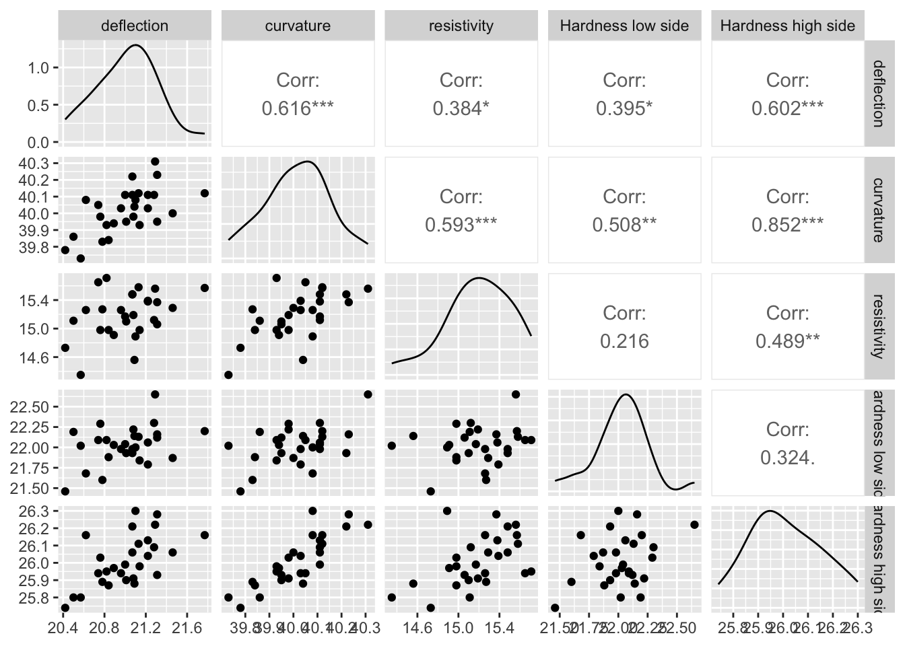
Ci dessous la carte de contrôle dans R pour la phase I :
S=cov(diff(bimetal1))/2
T2=T2_Hotelling_k1(bimetal1,S = S)
LSCT2=LSC_T2_Hotelling_k1(bimetal1)
plot_chart(T2,LSC=LSCT2["PhaseI"],Type="T2 individuel Phase I") 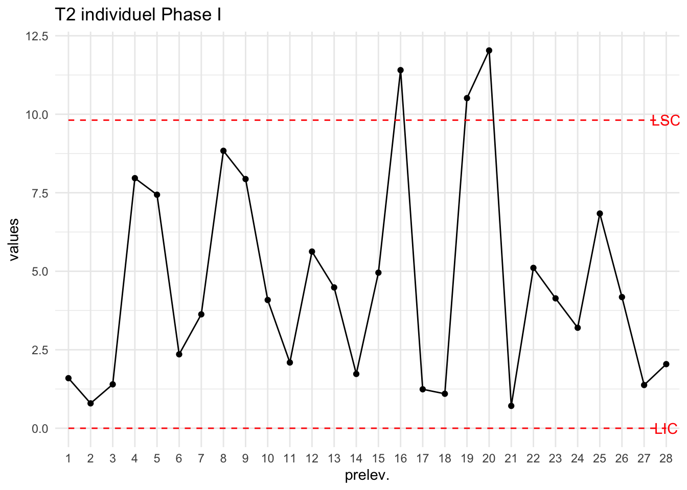
Les prélèvements 16, 19 et 20 sont exclus du calcul de LSC (car HC) :
df=bimetal1[-c(16,19,20),]
S=cov(diff(df))/2
T2=T2_Hotelling_k1(df,S = S)
LSCT2=LSC_T2_Hotelling_k1(df)
plot_chart(T2,LSC=LSCT2["PhaseI"],Type="T2 individuel Phase I")
On utilise les données bimetal2 pour suivre la production :
data("bimetal2")
T2=T2_Hotelling_k1(bimetal2,
MoyT = Moy_T(df),
S=S)
plot_chart(T2,LSC=LSCT2["PhaseII"],Type="T2 individuel Phase II") 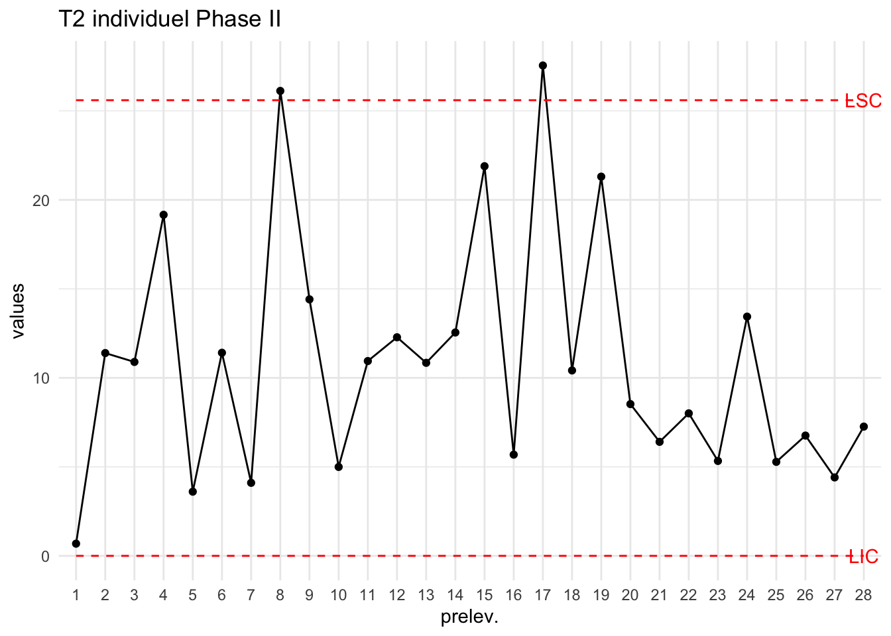
Deux prélèvements sont HC on va comme précédemment s’intéresser aux caractéristiques impliquant la présence de ces points HC. On peut pour ce faire regarder les cartes de contrôles univariées puis bivariée en ces points.
4.8 Carte sur la variance généralisée
- Pour \(X\sim\mathcal N_p(\mu,\Sigma)\), la variance généralisée est définie comme le déterminant de la matrice de covariance \(\Sigma\). Pour le prélèvement \(t\) on calcule \[D_t=\text{det}(\Sigma_t).\]
- Comme précédemment la matrice \(\Sigma\) est inconnue et donc elle est approximée à partir de \(S\).
S=generalized_variance(carbon1)
plot_chart(S$detSj,LIC=S$LIC,LSC=S$LSC,Type="Carte de la variance généralisée.")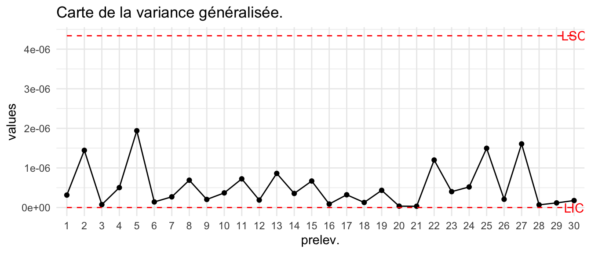
4.9 Cartes MEWMA
Les cartes \(T^2\) permettent comme les cartes de Shewart de détecter des fortes déviations mais ne permettent pas de détecter des faibles tendances à la hausse (ou bien à la baisse) de la moyenne du procédé.
On généralise les cartes EWMA à \(p\) variables. Etant données les \(k\) moyennes \((\bar X_1,..,\bar X_k)\) où \(\bar X_t\in \mathbb R^p\), on calcule \[Z_t=\lambda \bar X_t+(1-\lambda)Z_{t-1},\] pour \(0<\lambda<1.\) En pratique on choisit souvent \(\lambda=0.1\).
Calcul de \(T^2\) :
La valeur de \(T_t^2\) est \[T^2_t=(Z_t-\bar Z)^T.\Sigma_t .(Z_t-\bar Z),\] où \(\Sigma_t=\dfrac{\lambda[1-(1-\lambda)^{2t}]}{2-\lambda}\Sigma.\)
Comme précédemment on prend \(\hat \Sigma \simeq S\).
Le calcul de \(LSC\) est dans ce cas complexe
library(spc)
LSC=mewma.crit(l=0.1, L0=200, p=3, hs=0, r=20)On peut construire la carte MEWMA dans l’exemple sur le carbone :
data("carbon1")
T2=T2_MEWMA_kn(carbon1)
plot_chart(T2,LSC=LSC,Type="Carte MEWMA")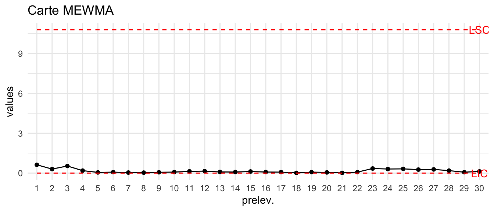
On peut aussi considérer des cartes MEWMA à données individuelles :
T2=T2_MEWMA_k1(bimetal1)
LSC=mewma.crit(l=0.1, L0=200, p=p, hs=0, r=20)
plot_chart(T2,LSC=LSC,Type="Carte MEWMA")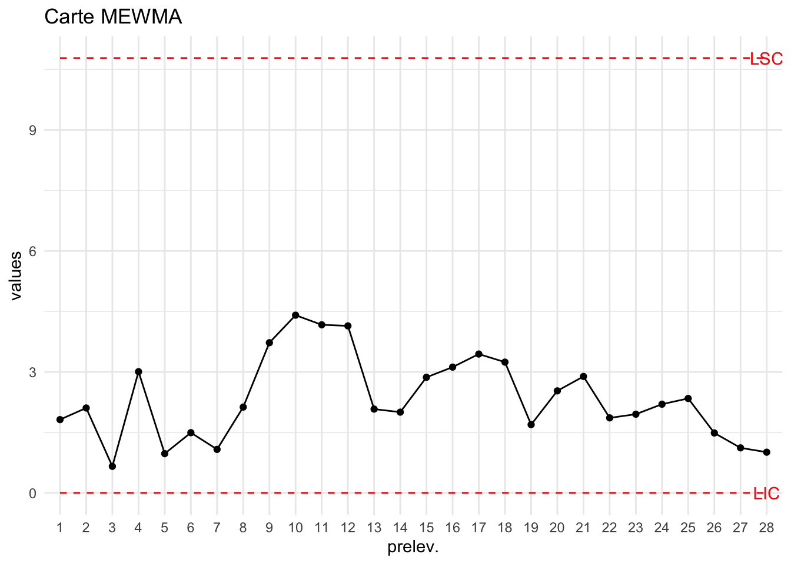
4.10 Cartes sur composantes principales
4.10.1 Cartes individuelles :
L’analyse en composante principale (ACP) est une méthode factorielle qui permet de réduire la dimension d’une matrice en résumant les caractéristiques à travers des combinaisons linéaires de celles-ci (appelées composantes principales). Elle est particulièrement indiquée lorsque la corrélation entre les caractéristiques est forte.
ACP
Etant donnée une matrice \(X\) centrée sur les colonnes de dimension \(k,p\). On diagonalise la matrice de covariance \(\Sigma\) de \(X\) ie on écrit \[\Sigma=U\Lambda U^T,\] où \(\Lambda\) est diagonale telle que \(\lambda_1\geq ... \geq \lambda_p\), \(U\) est une matrice orthogonale. - Les colonnes de \(U\) sont les scores factoriels des individus sur les composantes principales - Les valeurs propres \(\lambda_1\) sont les variances des composantes principales.
On peut utiliser la fonction PCA du package FactoMineR :
data(bimetal1)
library(FactoMineR)
X=scale(bimetal1[-c(16,19,20),],center=TRUE,scale=FALSE)
pca=PCA(X,scale.unit=F,graph = F)Le choix du nombre de composantes se fait en étudiant l’éboulis des valeurs propres
library(factoextra)Welcome! Want to learn more? See two factoextra-related books at https://goo.gl/ve3WBafviz_eig(pca)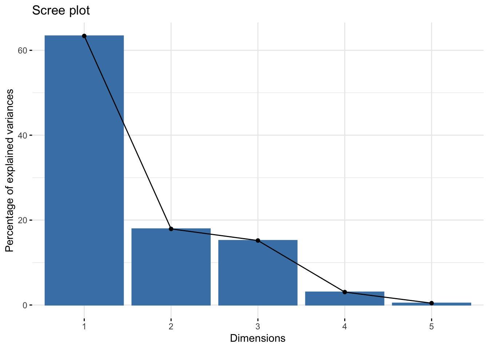
On choisit ici deux composantes.
On peut représenter les caractéristiques initiales sur le plan factoriel :
fviz_pca_var(pca)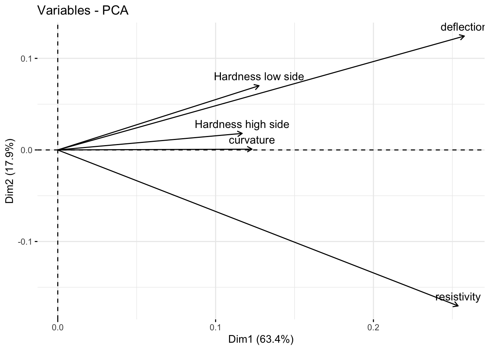
Le calcul de \(T^2\) se fait à partir des scores factoriels :
\[
T^2=\sum_{j=1}^p \frac{u_j^2}{\lambda_j^2}
\]
r <- 3
scores <- pca$ind$coord[,1:r]
S=cov(diff(scores))/2
T2pca=T2_Hotelling_k1(scores,S=S)
LSCpca=LSC_T2_Hotelling_k1(scores)
plot_chart(T2pca,LSC=LSCpca["PhaseI"],Type="T2 sur composantes principales")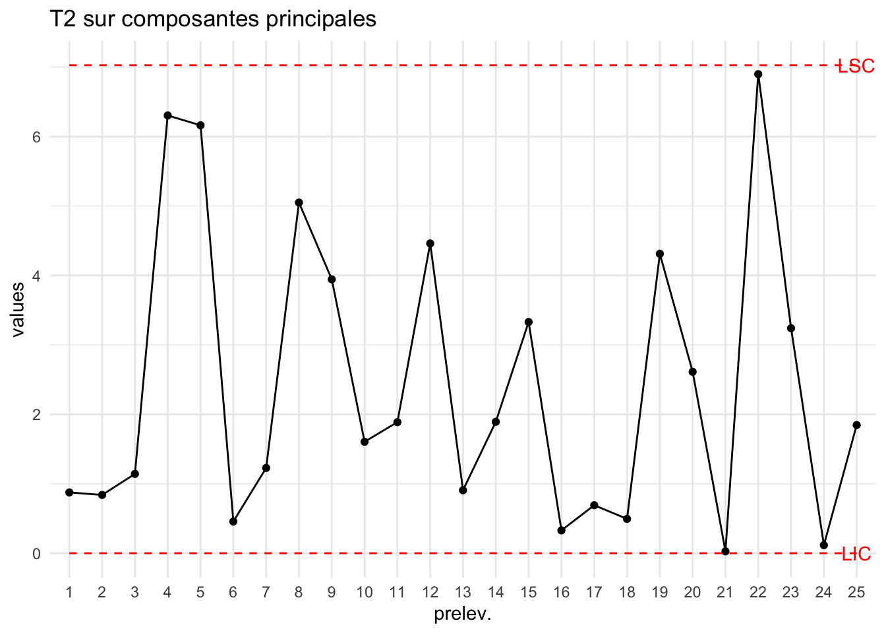
ce qui donne sur les nouveaux points :
X2=scale(bimetal2,scale=F)
scores2=predict.PCA(pca,newdata = X2)$coord[,1:r]
T2pca=T2_Hotelling_k1(scores2,
S = S)
plot_chart(T2pca,LSC=LSCpca["PhaseII"],Type="T2 sur composantes principales")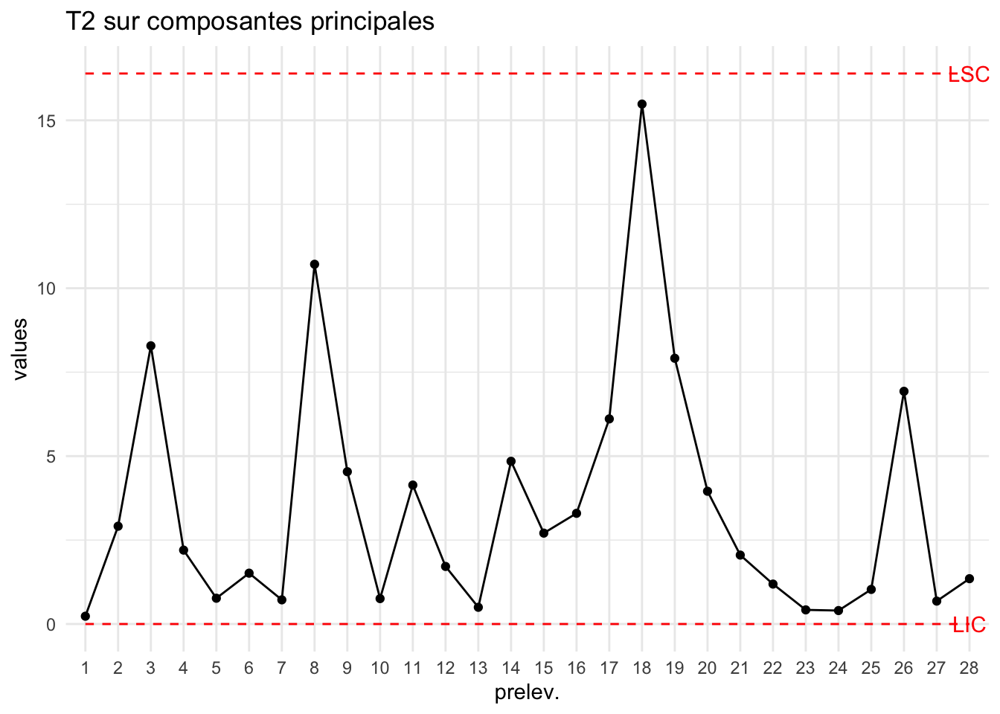
4.10.2 Cas général
On considère un cube de données \([x_{tji}]\).
- On peut appliquer la méthode vue précédemment à la matrice \((k,p)\) définie par \[ [\bar x_{tj}], \]
où \(\bar x_{tj}=\frac 1{n}\sum_{i=1}^n x_{tji}\) (ie on prend la moyenne de chaque prélèvement).
data(carbon1)
k=dim(carbon1)[1]
p=dim(carbon1)[2]
n=dim(carbon1)[3]
X=matrix(NA,nrow=k,ncol=p)
for(t in 1:k){
X[t,]=t(apply(carbon1[t,,],1,mean))
}
colnames(X)=dimnames(carbon1)[[2]]
Xc=scale(X,scale=F)Ensuite on applique la méthode précédente à \(Xc\) :
pca=PCA(Xc,scale.unit=F,graph = F)
fviz_eig(pca)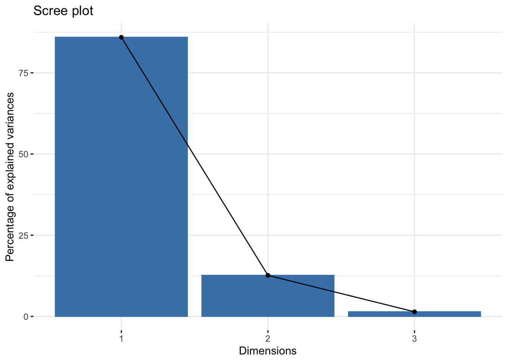
r <- 2
scores <- pca$ind$coord[,1:r]
S=cov(diff(scores))/2
T2pca=T2_Hotelling_k1(scores,S=S)
LSCpca=LSC_T2_Hotelling_k1(scores)
plot_chart(T2pca,LSC=LSCpca["PhaseI"],Type="T2 sur composantes principales")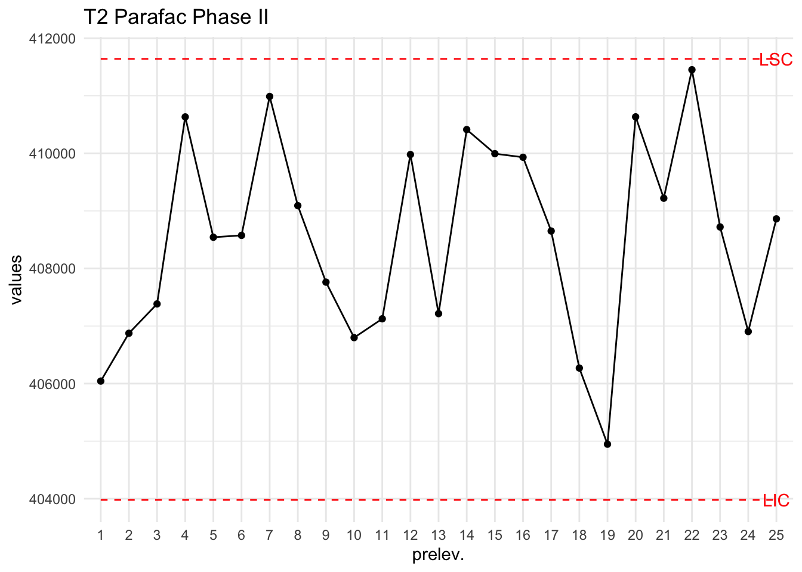
- On peut appliquer une méthode de factorisation (Parafac) au cube de données :
Parafac
Le modèle Parafac permet d’approcher un cube de données \(X\in \mathbb R^{k\times p \times n}\) en composantes canoniques
\[ x_{tji} \simeq \hat x_{tji} \sum_{l=1}^r a_{il}b_{jl}c_{kl}, \] où :
\(a_{il}\) est le coefficient de la matrice \(A\) de dimension \(k,r\) du mode 1 (prélèvement),
\(b_{jl}\) est le coefficient de la matrice \(B\) de dimension \(p,r\) du mode 2 (caractéristique),
\(c_{il}\) est le coefficient de la matrice \(A\) de dimension \(n,r\) du mode 3 (observation).
c’est une généralisation de l’ACP au cas trois voies.
On peut alors calculer le résidu et faire une carte de contrôle basée sur ce résidu (carte SPE).
Pour chaque prélèvement \(t\) le résidu est défini par \[ SPE_t=\Vert X_t-\hat X_t\Vert^2 \] ce qui donne la carte de contrôle :
X=carbon1
model <- parafac(X, nfac = 2, nstart = 5)
|
| | 0%
|
|============== | 20%
|
|============================ | 40%
|
|========================================== | 60%
|
|======================================================== | 80%
|
|======================================================================| 100%# Reconstruction du tenseur
X_hat <- fitted(model)
# Calcul du SPE pour chaque échantillon
SPE <- apply((X - X_hat)^2, 1, sum) # somme sur les modes 2 et 3
plot_chart(SPE,LIC=mean(SPE) - 3*sd(SPE),LSC=mean(SPE) + 3*sd(SPE),Type="Carte des résidus de Parafac")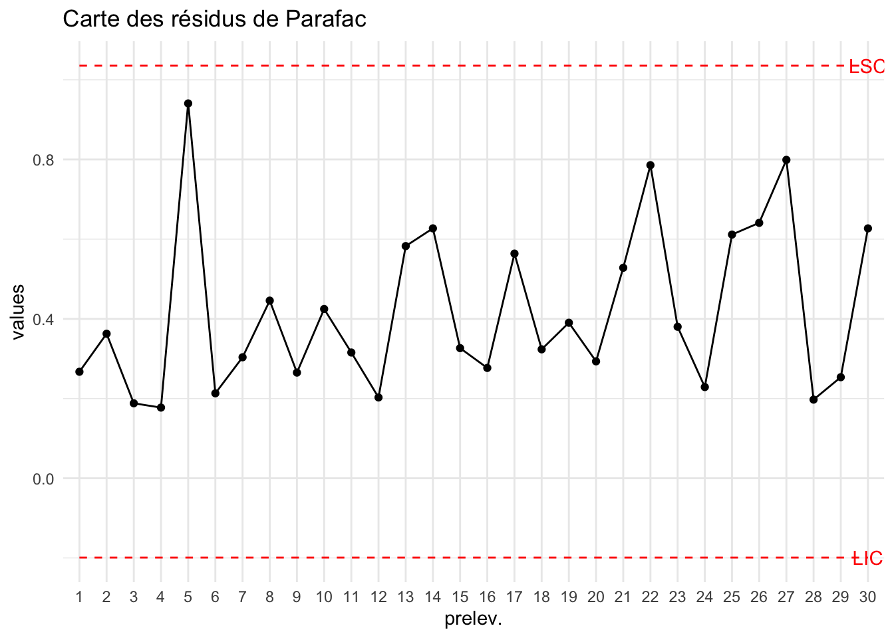
On peut aussi comme prédémment construire la carte de contrôle du \(T^2\) : on considère la matrice des scores \(A\) et on définit
\[ T_t^2=A_{t\bullet}^T.\Sigma_A^{-1}.A_{t\bullet} \] où \(A_{t\bullet}\) est la tième ligne de \(A\) et \(\Sigma_A\) la matrice de covariance de \(A\).
Sur R :
A <- model$A # Scores du mode échantillon
cov_A <- cov(A)
T2 <- apply(A, 1, function(t) t %*% solve(cov_A) %*% t)
plot_chart(T2,LIC=mean(T2)-3*sd(T2),LSC=mean(T2)+3*sd(T2),Type="Carte T2 Parafac")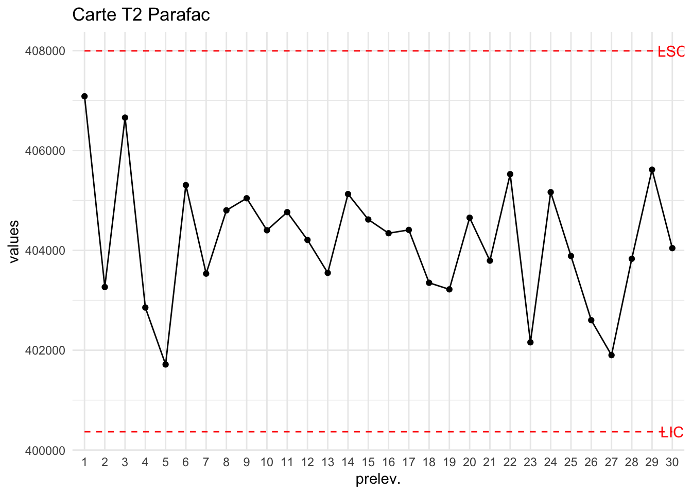